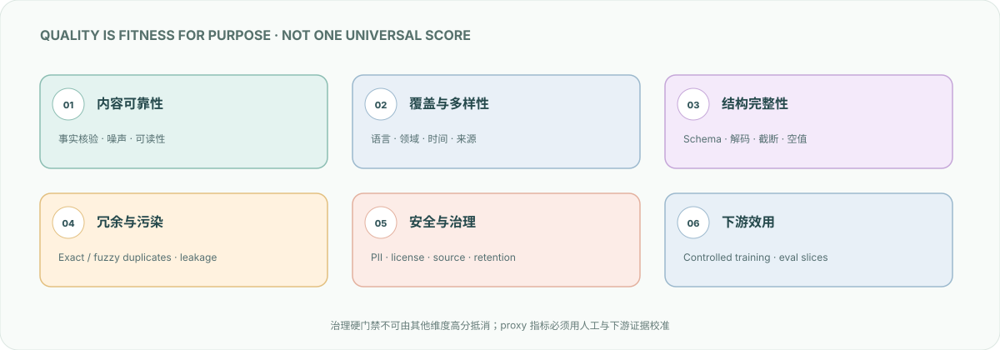
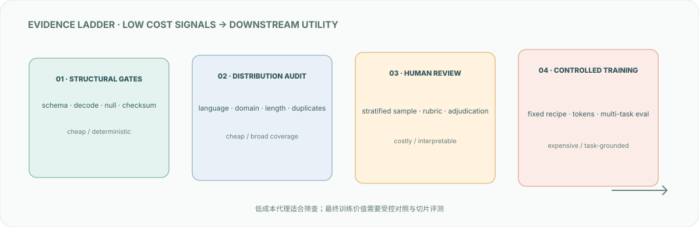

MODULE 18 / LLM DATA ENGINEERING
数据质量评估体系
构建覆盖、多样性、完整性、安全治理、人工抽检和下游消融组成的多层语料质量评估体系。
“我们过滤后留下了 30% 的文档，质量提升了。”这句话究竟说明了什么？保留率不是质量，分类器分数不是质量真值，困惑度也不是所有能力的代理。训练语料的质量必须围绕目标能力建立多层证据，而不是压成一个神秘的总分。
质量不是单指标：先定义你要保护什么
数据质量是相对于训练目标的适用性（fitness for purpose）。一份数据可能语言流畅，却高度重复；可能知识密度高，却覆盖不了低资源语言；可能格式干净，却包含隐私或许可风险。因此，质量评估至少要把下列维度拆开：

| 维度 | 可观测指标 / 审计问题 | 容易误读的代理 |
|---|---|---|
| 内容可靠性 | 抽样事实核验、噪声比例、可读性、来源可信度 | 低 PPL 不等于事实正确 |
| 覆盖与多样性 | 语言 / 领域 / 时间 / 文体覆盖、来源集中度、长尾召回 | unique domain 数不代表语义多样性 |
| 结构完整性 | schema 通过率、空字段率、编码错误、截断与损坏率 | JSON 可解析不等于正文质量好 |
| 冗余与污染 | 精确 / 近似重复率、训练评测重叠、重复曝光次数 | 重复率低不等于训练价值高 |
| 安全与治理 | PII、危险内容、许可、来源与删除请求可追踪性 | 公开可访问不等于可自由再分发 |
| 下游效用 | 受控预训练、多个能力切片、消融与成本对比 | 单个 benchmark 高分不等于全面提升 |
从便宜代理指标到昂贵下游证据

结构门禁
schema、编码、空文档、长度边界、来源 ID、重复文件和 checksum。
分布监控
按语言、域名、来源、时间、文档长度和质量分数切片；比较过滤前后分布。
分层人工审计
对高分、低分、阈值附近、低资源语言和新来源分别抽样；保留标注 rubric 与裁决记录。
受控下游实验
固定模型、tokenizer、训练 token 数、优化器、训练步数和评测套件，只改变待研究的数据因素。
研究案例：DCLM 与 Dolma 给出的两个提醒
DCLM：让数据策略在固定训练协议下比较
DataComp-LM (NeurIPS 2024) 提供了标准化的 Common Crawl 数据池、预训练 recipe 和 53 项下游评估，允许在多个模型规模上比较去重、过滤和混合策略。论文报告 model-based filtering 对构建高质量训练集很重要；其过滤方法对照中，fastText-based filtering 在作者测试的方案里表现最好。这不是说 fastText 在所有语料、模型或任务上都最优，而是说明过滤器应通过统一训练与评测协议比较。
论文还报告 DCLM-Baseline 在 7B 模型、2.6T training tokens 的设置下达到 64% 5-shot MMLU。这个数字应连同模型规模、token budget、训练 recipe 和 benchmark 一起引用，不能作为单独的“数据质量分数”。
Dolma：数据组成和构建过程本身也是研究对象
Dolma (ACL 2024) 发布了三万亿 token 的英语语料，来源覆盖网页、科学论文、代码、公版书籍、社交媒体和百科内容，并记录构建设计与中间状态。其价值不只是“量大”，还在于语料构成、清洗决策和中间版本可以被研究者检查。
把 Datasheets for Datasets 与 NLP Data Statements 融入数据卡：写清动机、组成、采集过程、预处理、适用用途、分发限制和维护机制。
人工抽检：为什么要分层，为什么要报告置信区间？
如果从一个包含数亿文档的语料中随机抽 100 篇，可能几乎抽不到低资源语言、新来源或阈值附近的样本。简单随机抽样适合估计整体平均，但不一定适合发现局部失败。应按语言、来源、时间、质量分数区间和文档长度分层；对稀有高风险切片过采样时，整体估计要使用对应的抽样权重。
对一个二元人工判定（例如“该文档是否符合当前 rubric”），在最保守的比例估计 下，简单随机抽样的近似样本量为：
其中 是置信水平对应的标准正态分位数（95% 双侧置信水平取 1.96）， 是预估的正例比例， 是误差界。取 时， 最大，得到保守样本量。这是无限总体近似下的规划公式，不包括 finite population correction、分层设计效应、非响应和人工标注不一致。最终报告应给出样本框、抽样概率、人工标注协议、置信区间和切片结果。
一份可落地的语料质量 Scorecard
{
"dataset_snapshot": "corpus-v7",
"intended_use": ["general-pretraining", "multilingual"],
"coverage": {
"language_distribution": "metrics/language.json",
"domain_concentration": "metrics/domains.json",
"time_distribution": "metrics/time.json"
},
"integrity": {
"schema_pass_rate": 0.998,
"decode_error_rate": 0.0002,
"empty_document_rate": 0.001
},
"redundancy": {
"exact_duplicate_rate": 0.04,
"near_duplicate_audit": "reports/minhash-audit.json"
},
"human_audit": {
"rubric_revision": "v3",
"sample_design": "stratified-v2",
"agreement_report": "reports/annotator-agreement.json"
},
"downstream": {
"recipe_commit": "fixed-training-recipe",
"token_budget": 1000000000,
"evaluation_suite": "suite-v4"
}
}上面的比例是虚构示例值，仅展示 scorecard 结构，不代表任何公开语料。真实报告必须注明分母、样本范围、时间窗口和统计口径。
from scripts.quality_metrics import required_sample_size, wilson_interval
# 95% normal-approximation planning; p=0.5 is the conservative choice.
n = required_sample_size(margin=0.03, z=1.96, p=0.5)
low, high = wilson_interval(successes=60, trials=100, z=1.96)
print(n, (low, high))样本量公式按简单随机抽样近似。分层抽样、cluster sampling、人工复核缺失、有限总体修正和多重比较都会改变实际设计。
质量评估常见误区
- 只报总体均值：英语大类可能掩盖少数语言和领域切片的崩溃。
- 把 proxy 当目标：分类器、PPL、可读性和去重率只能筛查特定风险。
- 抽样没有权重：为稀有切片过采样后，直接把样本比例当成总体比例会产生偏差。
- 评测不固定 recipe：模型规模、训练 token、tokenizer 或学习率变化会混淆数据策略的效果。
- 没有负面结果：只发布成功切片会让读者看不到过滤策略对覆盖、长尾和其他能力的损失。
- 把合规当质量分数：许可、隐私和安全是必须通过的治理门槛，不能被其他维度的高分抵消。
参考资料
- Li et al. (2024), DataComp-LM: In search of the next generation of training sets for language models，NeurIPS 2024 Datasets and Benchmarks。
- Soldaini et al. (2024), Dolma: an Open Corpus of Three Trillion Tokens for Language Model Pretraining Research，ACL 2024。
- Gebru et al. (2021), Datasheets for Datasets，Communications of the ACM。
- Bender & Friedman (2018), Data Statements for Natural Language Processing，TACL。
- MLCommons, DataPerf: Benchmarks for Data-Centric AI，NeurIPS 2023。